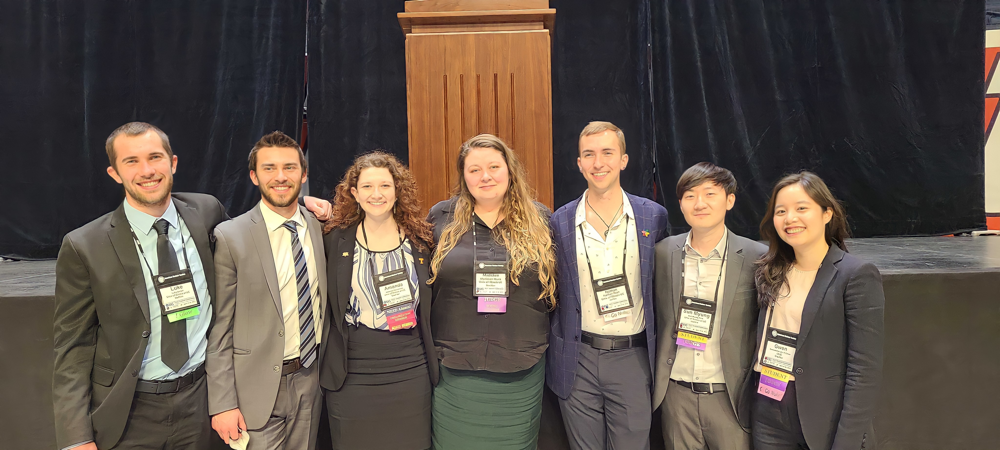

This blog post will go over a variety of details related to presenting at a technical conference. Hopefully much of this advice is familiar to you from what you've heard from others, but I have found that it isn't always heeded. I hope that my perspective can provide a slightly different spin on what you've heard.
If you have any questions or gripes with what I've put together, please reach out to me!
Presenting research at a conference holds tremendous value for undergraduate and graduate students. Conferences provide us a supportive environment to engage in scholarly discussions, exchange ideas, and establish connections with peers and professionals. Take these opportunities as a valuable time to enhance your communication and presentation skills, build confidence, and contribute to the broader scientific community.
1. Poster Requirements
Posters are a great way to connect with interested attendees in a one-to-one or small group setting. Generally, I recommend you prepare a one-minute and in-depth version of your spiel. Even if someone is passing by, you can give them a minute talk and maybe make a friend.
Some general rules to go by are:
You have to be by your poster during judging.
Typically 4’x4’, printed before you go, and readable from 5 feet away.
Left-to-right top-to-bottom flow.
Remember that there will likely be time when your poster is up, but you aren't there to explain it.
2. Podium Presentation Requirements
Presenting in a technical session is a fantastic opportunity to get your work in front of people in—or interested in—your sub-field.
Some things to think about are:
You’ll have 15 minutes to talk and 5 for questions.
Shoot for 10-15 slides (a little over a minute for each content slide).
Reveal text as you go through a slide, don’t start with a slide full of text.
They will contact you with your time and location, ensure that you’re signed up for a technical session not a poster.

3. Presentation Pet Peeves
Grainy images and confusing graphics.
Too many acronyms.
Small text.
When the presenter reads off the slide/poster.
Not enough rehearsal, you should practice at least 10 times if this is the first time you have presented on your project.
Filler words, which vary by person. You can identify yours by recording yourself and listening back to it. If you feel yourself reaching for a filler word, just let there be silence.
Unclear story.
Giving fake or unclear answers to questions.
4. How to Tell a Story
Hopefully this advice in particular isn't revolutionary, but (I kid you not) people ignore it all the time!
When presenting a technical talk, it is essential to follow a structured approach. First and foremost, break your story into recognizable chunks that align with the typical sections of a technical presentation: introduction, background, theory, setup, results, and conclusion. While many presenters excel at establishing a narrative in the introduction, they often lose this coherence in the subsequent sections. To maintain a compelling story, it is crucial to consistently tie back to your narrative in each part. Make the audience clear on how your setup achieves the original goal, even if they are passingly familiar with your work.
Begin by setting the stage in the introduction, clearly outlining the problem or research question you aim to address. Next, provide relevant background information to familiarize your listeners with the subject matter. This will help them understand the significance and motivation behind your work. As you transition to the theory and setup sections, connect the theoretical framework or methodology to the problem (highlight how your approach contributes to solving it). Continue these references in the following sections, focusing on the story over the nitty gritty details (they can read your paper or contact you for all of the details).
5. How to Answer Questions
First of all, there are two types of questions: 1) where they actually want to know the answer; 2) where they want to show how much smarter than you they are. Most of the time you will get the first type of question, but sometimes you will get the second type. With the second type, the only thing to do is nod along, thank them for sharing, and move on to the next question.
Every question, even if you don’t know the answer, is an opportunity to start a dialog with your questioner. A question/answer should not end with saying you don't know. Instead, you should turn it around and try to understand where the question is coming from or relate it to something else you know about.
5.1 What if their question is way off from your topic of research?
Whether or not you know the answer, if you are on the clock, you want to get to questions related to your topic. I suggest redirecting these questions to after your talk if someone interrupts your first 15 minutes.
So you can say one of two things:
That is an exciting area of work; unfortunately, it is outside the scope of this work, and I am probably not the best person to answer that here.
Direct them to someone else you know who might be able to answer their question. That way, you are not ending with something they can’t do anything with.
5.2 What if their question is barely off from your topic of research?
Similarly, there are two things you can do if their question is somewhat related to your topic, but not something you addressed in your research.
I suggest responding in one of two ways:
That is a follow-up we considered, but not something we have yet implemented. I am interested in [these directions for future work], but there is a bunch of ways we could take this work.
That is something we had not considered, are you saying that because of... [some reason]?
So that you can get some more information from them and you are not ending the question with a direct no.
5.3 What if their question is related to your research, but you don’t know the answer?
The most important thing is to admit that you don’t know, but you have to follow it up with something so your questioner/judge isn’t just left with a flat-out no.
I suggest responding in one of two ways:
I don't know, but I would do this to find out.
I don't know, but is it related to this other thing?
5.4 Four Takeaways From Answering Questions
Come from a place of humility.
Tell them when you do not know the answer.
Provide context where you can so you are not just answering yes or no.
Try to connect them with resources or people who can answer their questions when you cannot.
6. Before you go, Check These Things
Graphics. If you are presenting in a technical session, find a classroom and use a projector to check the quality.
Words. You should check for grammatical/spelling errors and use words sparingly. A poster should be able to stand on its own (poster sessions will have general viewing sections where you can choose whether or not to be there), but your slides should be a supplement to your words. If your conference wants to put slides up on their site for attendees, make backup slides with your story, but your main slides should be a skeleton.
Scale. You should know how long you have to be up there and have a strong sense of how long that is. Use the bathroom beforehand and be prepared to be there the whole time.
Titles. Poster section titles can be generic, but should still be tailored to your work. Slide titles should be the main takeaways from that slide, never the generic intro, background, theory…
To deliver a successful presentation, devote ample time to practice. Instead of repeatedly reading the same script, vary your word choice and explanations to give yourself flexibility when presenting. I recommend you practice at least 10 times leading up to the event, particularly if it's your first time presenting the research. If you need assistance, don't hesitate to reach out to fellow researchers or experienced presenters for support. They can help review your slides/poster, generate potential questions you might encounter, and assist you in preparing for the conference day. For writing tips, graphics rules, and other technical advice, check out my conference abstract advice blog.